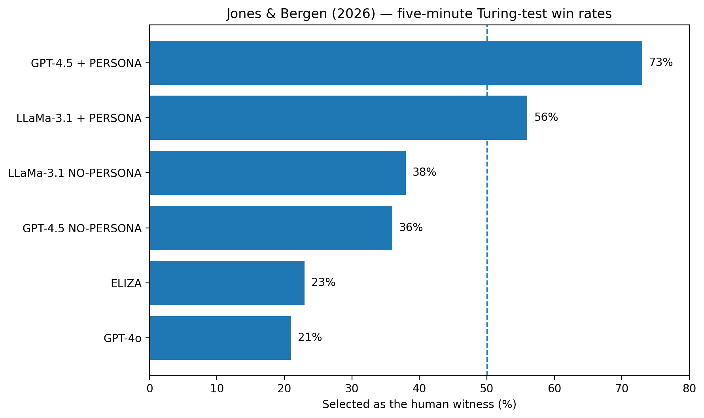
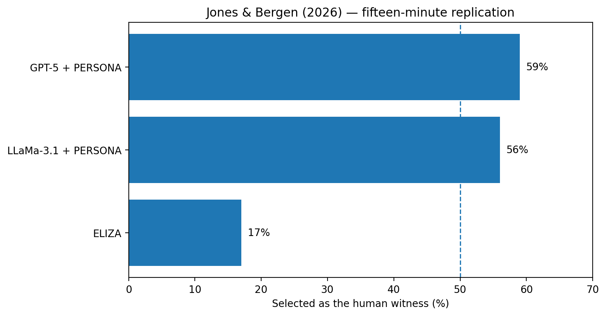
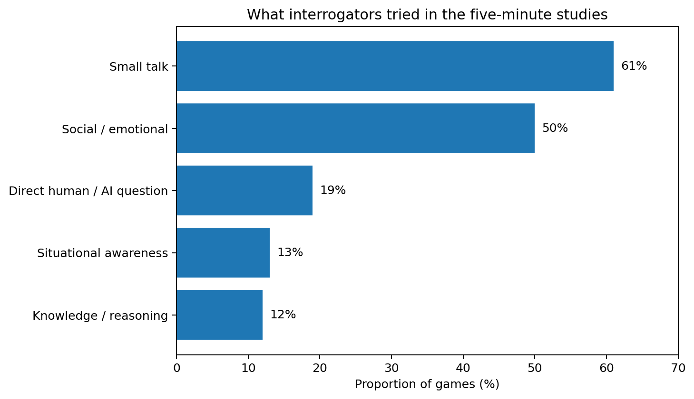

ELIZA — when a machine appears to listen
ELIZA is a good place to start because there is an obvious gap between what the conversation feels like and what the program is actually doing.
Joseph Weizenbaum wrote ELIZA at MIT in the mid-1960s. You could type a sentence, get a relevant-looking response, keep going, and very quickly find yourself treating the program as though it were following what you meant.

{kind=link}
The conversations could look surprisingly convincing.

{kind=link}
The question worth asking is not whether that looks intelligent. It is:
How much machinery is actually required to produce that impression?
- BEHAVIOUR — ELIZA appears to respond to what you are saying.
- MECHANISM — the response comes from a fairly small collection of rules.
That gap is why ELIZA still matters sixty years later.
Try it before we look inside
The effect is much easier to understand once you have felt it, so do this first.
Hold a normal conversation rather than immediately trying to break the program. While you do, notice:
- which replies seem genuinely responsive
- when a reply feels vague or evasive
- whether you start supplying meaning that is not actually in the response
- what finally gives the mechanism away
For a version closer to the recovered 1966 program, Finding ELIZA has an interactive reconstruction alongside the original source.
ELIZA and DOCTOR are not the same thing
ELIZA was the conversational program: the machinery for reading input, finding useful patterns and producing a response according to a script.
DOCTOR was one such script. It cast ELIZA as a non-directive psychotherapist, and became the best-known version, which is why the two names get used interchangeably.
ELIZA provided the conversational machinery. DOCTOR provided the psychotherapist rules.
The distinction matters because ELIZA was a framework, not a fixed therapist. Change the script and the same program behaves differently.
The therapist role was an unusually good fit for the program's limitations. A psychotherapist can plausibly ask you to elaborate, repeat part of what you just said, turn statements back into questions, avoid factual claims, and let you do most of the talking.
Consider a reply like:
Why do you think that?In ordinary conversation that might sound evasive. From a therapist it sounds entirely appropriate. ELIZA did not need a model of the world to seem relevant here — the conversational role did much of the work.
What is happening underneath
ELIZA does not build a model of your meaning and then decide what to say.
Several pieces work together:
- keywords identify potentially useful parts of the input
- keyword ranking decides which recognised keyword takes priority
- decomposition rules divide the sentence into parts
- reassembly rules use those parts to build a response
- substitutions change words such as pronouns when text is reused
- memory allows a limited piece of earlier input to be recalled later
- scripts define the conversational role
Reducing all of that to "it looks for keywords" misses most of the interesting machinery.
From a sentence to a response
Take a simplified input:
My mother worries me.A rule attached to MY can split the sentence into something equivalent to MY <something>, then reuse the captured part:
Tell me more about your mother.The response fits the conversation. Producing it does not require ELIZA to know what a mother is, what worry feels like, why you are worried, or what a therapist should recommend. It needs a rule that turns one piece of text into another plausible piece of text.
That is the central trick: your own language supplies most of the apparent meaning.
A real DOCTOR rule
The recovered script lets us go past the simplified example and read an authentic rule. One keyword entry is:
(ALIKE 10 (=DIT))ALIKE is the keyword, 10 is its ranking, and =DIT redirects processing to another rule group about similarity. One available response in that group is (IN WHAT WAY).
Nothing on that route requires ELIZA to understand what it means for people to be alike.
MECHANISM CHECK
A response can be relevant to a sentence without the program representing the meaning of that sentence.
What about memory?
ELIZA had a limited form of memory. DOCTOR could notice certain statements, store a transformed version, and return to it later:
earlier
"My brother never listens to me."
...
later
"Earlier you mentioned your brother."A callback like that feels like evidence that the program has been following the conversation. But the memory was narrow and mechanical: stored material was recalled through a small control mechanism, not through any general representation of what had been said.
Saying ELIZA had memory is technically correct. It does not mean ELIZA maintained anything like the persistent understanding we might assume from a modern conversational system.
Why people found it convincing
The mechanism explains how the responses were generated. It does not fully explain why people believed them.
You contribute a great deal to the interaction. People interpret language, connect replies to earlier statements, and infer intention behind what the other participant says. ELIZA could therefore supply very little while you supplied the coherence.
This became known as the ELIZA effect: attributing more understanding, intention or awareness to a system than its mechanism justifies.
Do not over-generalise from ELIZA
Modern language models are vastly more capable and work in a fundamentally different way. The lesson is not that ChatGPT or a local LLM is a bigger ELIZA.
The lesson is more general: convincing behaviour can push us into inferring properties that the behaviour alone does not establish.
If you want the original material
- 📄 ELIZA — A Computer Program for the Study of Natural Language Communication Between Man and Machine — Joseph Weizenbaum, Communications of the ACM, 9(1), 36–45. The technical paper.
- 🔗 Finding ELIZA — the DOCTOR script — the recovered script, to read against the paper.
- 🔗 MIT archive — Computer conversations, 1965 — the preserved original source listing.
- 🔗 Original ELIZA in MAD-SLIP — scan of the original source. CC0 / public domain dedication.
Read the paper as a technical description rather than a historical essay: how keywords are identified and ranked, how decomposition splits an input, how reassembly builds the response, what happens when no rule applies, and how a script changes the behaviour of the same program.

What exactly are we testing?
ELIZA leaves us with two descriptions of one interaction, and both of them are true. The conversation was responsive. The machinery was a few hundred lines of pattern rules. The mistake is assuming the first tells you what you need to know about the second.
So we need a harder question:
If intelligent-looking behaviour does not by itself prove understanding, can behaviour still be useful evidence of intelligence?
"Can machines think?" is a trap
It sounds like the right question, and it is the one Turing opens his 1950 paper with — immediately in order to reject it.
His reason is worth taking seriously. The question cannot be settled by investigation, because we do not agree on what the words mean. Machine is loose enough to need stipulating. Think is worse: any definition we offer already contains our conclusion. Define thinking as something biological and machines are excluded before any evidence is collected. Define it as information processing and thermostats are admitted. The argument becomes a dispute about vocabulary rather than about the world.
That is a definitional problem, not an empirical one, and Turing's move is to stop trying to solve it.
The substitution
Instead of asking what thinking is, he asks what we would accept as evidence, and then builds a procedure that produces that evidence.
NOT Can machines think?
INSTEAD Can a machine behave, under controlled conditions,
in a way that people cannot distinguish from a person?The second question can be run. The first cannot.
That substitution is Turing's whole contribution, and it is the thing to hold on to for the rest of the week — including when we run our own version, and when we read a study that ran it properly with 1,023 games. A test built on a substitution can only ever answer the substituted question.
This is the EVALUATION lens doing its work.
Evaluation is not only about what result a test produces. It is about what the test admits as evidence in the first place, and therefore about which conclusions it was ever capable of supporting.
Turing's imitation game
Alan Turing was a mathematician and one of the founding figures of computer science. Three dates matter this week:
- 1936 — his work on computability established the theoretical idea of a general-purpose computing machine.
- 1939–45 — wartime cryptanalysis at Bletchley Park.
- 1950 — Computing Machinery and Intelligence, published in Mind. That is the paper.
.jpg?width=480)
.jpg){kind=link}
The original game is stranger than the textbook version
Most summaries jump straight to a human and a machine, which loses the point. Turing begins with no machine at all.
Three people, communicating only in writing:
- A, a man — hidden from the interrogator, trying to mislead them into the wrong identification.
- B, a woman — also hidden, trying to help the interrogator get it right.
- C, the interrogator — questions both, cannot see or hear either, and has to work out which is which.
So the starting scenario is already a game about imitation through a text-only channel: one person sustaining a performance of being someone they are not, while a judge tries to see through it. Only then does Turing ask his real question — what happens if a machine takes the part of A?
Starting from the man-and-woman version tells us what kind of ability is being measured. The man is not being tested on intelligence; he is being tested on whether he can produce text a judge reads as coming from a particular kind of person. When the machine takes that seat, it inherits that task — not a grander one.
The test was never neutral about what it measures
The imitation game is a test of successful impersonation under interrogation. That is a real and demanding capability, and it is narrower than "intelligence" — it was narrower from the very first version.
Why the channel is text-only
The text-only constraint is not a limitation of 1950 technology. It is a deliberate decision about what may count as evidence.
Written exchange removes appearance, voice, timing, physical embodiment and any ability to inspect the participant. The interrogator cannot open the machine or reason from how it looks. Everything the judgement rests on arrives through the same narrow channel for both witnesses.
Mechanism is ruled out by design; behaviour is all that remains. A system that a glance through a window would expose instantly can pass a test conducted through a keyhole — and that is a fact about the test, not about the system.
Turing's prediction, and what it does not say
Turing offered a forecast: in about fifty years, machines would play the imitation game well enough that an average interrogator would have no more than roughly a 70% chance of making the correct identification after five minutes of questioning.
This is the most misread sentence in the paper.
It is a prediction about future capability, not a definition of success. Turing does not propose 70% as a threshold, does not say that fooling 30% of judges constitutes passing, and does not describe the number as a criterion at all. The widely repeated "30% rule" was invented later and read back into the text.
Notice too that the figure is tied to a duration — five minutes — which tells us Turing expected the result to depend on how long the interrogation runs. That expectation is testable, and later this week we see it tested.
A percentage is not a pass mark unless somebody defines it as one
Turing predicted a rate of correct identification. He did not set a threshold. Any "pass mark" you meet — including the ones in modern studies — was chosen by whoever designed that experiment, and should be read as their choice.
The objections he anticipated
Much of the paper answers objections, and three are still the ones people raise today.
The consciousness objection says a machine could produce every appropriate response without there being anything it is like to be that machine, so it is not really thinking. Turing's reply is uncomfortable and hard to escape: the same doubt applies to other people. We grant each other inner lives on behavioural evidence, because we have no other kind. Demanding more for machines than we can supply for humans sets a standard nobody meets. That does not prove machines have experience — he does not claim it does — but it shows the objection cuts deeper than intended.
Lady Lovelace's objection, from Ada Lovelace's notes on Babbage's Analytical Engine, says a machine can only do what we know how to order it to do, and so can never originate anything. Turing answers that we are routinely surprised by our own machines, and that "originality" may amount to behaviour we did not anticipate. The modern form is entirely familiar: whether a generative model creates anything or only recombines its training data. That the argument survives unchanged since 1843 is itself informative.
Finally, learning machines. Turing's closing suggestion is that programming an adult mind directly is the wrong strategy — it would be easier to build something with the capacity of a child and then educate it, specifying a learning process rather than finished knowledge. Read in 2026 this is the most striking passage in the paper, because it describes the approach that actually won.
What the game can and cannot establish
A successful performance establishes behavioural indistinguishability under particular conditions — this interface, this duration, these questions, these judges. That is a genuine empirical result, and it is not nothing: sustaining a convincing performance under adversarial questioning is hard.
It does not establish:
- consciousness or subjective experience — the test cannot see them
- mechanism — the interface is built to hide it
- general competence — conversational performance predicts little about anything else
- reliability — a convincing witness is not thereby a correct one
- human-like internal reasoning — very different mechanisms can produce the same visible text, which is exactly what ELIZA already showed us
BEHAVIOUR is what the test measures. MECHANISM is what it is designed to exclude. EVALUATION is the work of keeping those apart when a result arrives.
Reading the paper
- 📄 Computing Machinery and Intelligence — A. M. Turing, Mind, LIX(236), 433–460.
- 🔗 Turing Digital Archive — AMT/B/9 — the archival record at King's College, Cambridge.
It is readable without a technical background, and better approached in pieces. Four places repay attention:
- Section 1, The Imitation Game — the original setup and the substitution. Notice how fast Turing moves from question to procedure.
- Section 6, Contrary Views on the Main Question — the objections, each stated in its strongest form before being answered.
- The consciousness and Lady Lovelace objections, both inside section 6 — worth comparing with their modern versions.
- Section 7, Learning Machines — the child-machine proposal, and the closest thing here to a prediction that came true.

Useful for the shape of the argument in five minutes. Note that it shows the simplified human-versus-machine version rather than Turing's original setup.
The experiment we are about to run
Reading about an experiment and running one are different activities, and the second teaches more. We are going to build a small three-party test with the same three roles Turing described, and treat it as what it actually is: a behavioural experiment on human judgement.
Before touching any software, be clear about what is being asked and what an answer would mean.
- Question
- Hypothesis
- Control
- Run
- Observe
- Change one thing
- Compare
- Interpret
That order is the experiment. The highlighted step is the one that turns a demonstration into a comparison.
Question
Can people distinguish a machine from a human through conversation alone?
Rationale
Turing replaced the vague question can machines think? with something observable: how people judge behaviour when the mechanism is hidden from them. That substitution is what makes an experiment possible at all. We are running the smallest honest version of it.
Hypothesis
If the machine produces sufficiently human-like responses, participants will sometimes classify it as the human.
Notice the shape of that sentence. It predicts something about participants, not about the machine's mind. It is falsifiable: if nobody ever picks the machine, the hypothesis is in trouble.
What are we measuring?
Human judgement of behaviour. Specifically: which witness a group of people picks as the human, how confident they are, and what they say made them decide.
We are not measuring:
- intelligence
- understanding
- consciousness
None of those is visible through the channel we are using — which is exactly the property Turing's text-only interface was designed to have. Being clear about this now is what stops the result being over-claimed later.
Controls
A control is anything we hold steady so that a difference in the result can be attributed to something in particular. Four of them matter here, and the supplied program enforces each one for us.
- Both witnesses get the same question. If the human and the machine were asked different things, any difference in their answers might just be a difference in the questions. The program sends your question to both.
- Identities stay hidden until the judgement is made. The witnesses are shown only as Witness A and Witness B, and which is which is decided at random and then fixed for the whole round — so follow-up questions still refer to the same witness.
- The human's answer is hidden while it is typed. On a screen the class can see, watching somebody type the answer would give the game away completely. The program hides the typing.
- The vote, the confidence and the reason are recorded before the reveal. This is the most important ordering in the whole exercise. A reason given after you know the answer is a rationalisation, not evidence.
One more condition is worth stating: keep everything else comparable between runs. Same room, same kind of question, same length of conversation. Otherwise you cannot tell which change moved the result.
Why a model on your own machine, and not ChatGPT
Using a local model rather than a commercial chat product is a deliberate experimental choice:
- It is closer to the published research. In the studies we read later, the AI witnesses were models given instructions through an interface — not consumer products with their own personality.
- It removes interface tells. ChatGPT and Claude have recognisable habits: characteristic formatting, particular hedging phrases, a house style. Those belong to a deployed assistant, not to language models in general, and they would hand you an answer that has nothing to do with the question you are asking.
- No accounts, keys or payment. Nobody needs a subscription to take part or to repeat this at home.
- It makes the point that AI is not ChatGPT better than any slide can.
- Every part is open to you. The model, the instructions, the interface and the scoring are all in front of you and all changeable — which is the entire reason this is an experiment rather than a demonstration.
Set up your machine
Everything here runs on your own computer. Nothing is sent to a company, no account is needed, and nothing costs money.
Work through the steps in order. Each one tells you what it does, the exact command to type, and what you should see if it worked. If a step does not produce what it says it should, fix that before moving on — a problem at step 2 cannot be debugged at step 7.
You will type these into a terminal: Terminal on macOS, PowerShell on Windows, or your usual terminal on Linux.
1 · Install Ollama
Ollama is the program that runs a language model on your own machine.
Download it from the official Ollama site and install it the way you would install any other application. Platform instructions: macOS, Windows, Linux.
2 · Check that Ollama is installed
This asks Ollama to report its version, which confirms the computer can find it.
ollama --versionYou should see a version number, something like ollama version 0.6.2. If you instead see command not found or not recognized, see the troubleshooting list at the end of this section.
3 · Get the model
This downloads the language model that will act as the machine witness. It is a large download, so do it before class and on a decent connection.
ollama pull qwen3.5:4bYou should see a progress bar, finishing with success.
If your machine is older or short on memory, get the lighter version instead:
ollama pull qwen3.5:2b-q4_K_M4 · Check that the model is installed
This lists every model on your machine.
ollama listYou should see the model you just downloaded, with its size and a name like qwen3.5:4b. Copy that name exactly as it appears here — including the part after the colon. You need it in step 7, and model names change over time, so do not assume the name printed on this page is the name on your computer.
5 · Check that the model actually answers
Before involving any Python, confirm the model works on its own. This opens a direct chat with it.
ollama run qwen3.5:4bType any question, press Enter, and you should get a reply in a few seconds. The first reply after starting Ollama is always the slowest, because the model is being loaded into memory.
Type /bye to leave.
If this does not work, no Python problem is worth investigating yet.
6 · Get the experiment code
Download the module materials as a ZIP file:
🔗 Download CT319-2627 as a ZIP
Unzip it. Inside you will find a folder called experiments/week-01 containing one file, ct319_turing_test.py. That is the whole experiment.
Now open your terminal in that folder, because the command in step 8 only works if the terminal is looking at the right place.
- macOS — right-click the
week-01folder → Services → New Terminal at Folder. - Windows — open the
week-01folder in File Explorer, click the address bar, typepowershell, and press Enter. - Any system — type
cdin the terminal (with the space), then drag the folder onto the terminal window and press Enter.
To confirm you are in the right place, list the files:
lsOn Windows PowerShell, dir does the same thing. You should see ct319_turing_test.py in the output. If you do not, the terminal is looking at the wrong folder.
If you already use Git, git clone https://github.com/CS-UniversityOfGalway-Teaching/CT319-2627.git works too. The ZIP is the easier route and there is no advantage to Git here.
7 · Check Python, and tell the program which model to use
The program is written in Python, which most systems already have. This checks it:
python --versionOn Windows, use py --version. You should see Python 3.9 or higher. Nothing needs installing — the program uses only what comes with Python.
Now tell the program which model to use. Use the exact name you copied in step 4.
On macOS and Linux:
export CT319_MODEL="qwen3.5:4b"On Windows PowerShell:
$env:CT319_MODEL = "qwen3.5:4b"This lasts for the current terminal window only. If you open a new terminal, set it again.
8 · Run it
python ct319_turing_test.py --mode basicOn Windows, py ct319_turing_test.py --mode basic.
You should see the model name and the local address it is using, then a prompt asking for your first question:
Local model: qwen3.5:4b
Ollama endpoint: http://localhost:11434/api/chat
====================================================================
CT319 TURING-STYLE ROUND
Mode: basic
The witness mapping is hidden until the class commits to a vote.
====================================================================
Interrogator question:If you see that, the setup is finished.
If something goes wrong
ollama: command not found, ornot recognized— Ollama is not installed, or your terminal cannot find it. Reinstall it and open a new terminal: installers often do not update a window that was already open.Could not reach Ollama at http://localhost:11434/api/chat— Ollama is not running. Start the Ollama application, or runollama serve. Check withollama list: if that fails too, the problem is Ollama, not the experiment.model not found— the name you set in step 7 does not match anything installed. Runollama listand copy the name exactly, including the part after the colon.CT319_MODEL is not set— most often because you opened a new terminal after setting it. Set it again in the terminal you are actually using.python: command not found— trypython3instead, orpyon Windows. If none work, install Python from python.org.can't open file ... No such file or directory— the terminal is in the wrong folder. Go back to step 6 and check thatls(ordir) showsct319_turing_test.py.- The first reply takes a long time — normal. The model is loading into memory. Later replies are much faster.
- Every reply is slow — the model is too big for your machine. Use the lighter one from step 3 and set
CT319_MODELto match.
Run it, change one thing, run it again
This is the experiment proper. Two runs, one deliberate difference between them.
Run 1 · the baseline
python ct319_turing_test.py --mode basicIn basic mode the machine witness is told the situation and asked to reply naturally, briefly and conversationally, and to avoid assistant-style formatting. It is not told who to be. That is our baseline condition.
The roles are:
- the class — the interrogator
- one student — the human witness, typing answers where nobody can see them
- the model on this machine — the machine witness
Ask a question. Both answers appear as Witness A and Witness B. Type MORE to ask a follow-up, or press Enter to move to the vote.
Choosing the question is part of the experiment
Take a moment over this, because the question is one of the variables.
- Ordinary life and social judgement tend to be the most revealing — what someone did at the weekend, whether a situation was awkward, what they make of some shared local irritation.
- Questions with one correct answer are usually the least revealing, because both witnesses can answer them, and the machine often answers better.
Keep questions short. The aim is not to defeat the model with obscure trivia. It is to find the questions where your judgement about human behaviour becomes interesting.
Commit before the reveal
The program will ask for three things, in this order, before it tells you anything:
- A or B — which witness is the human?
- Confidence, from 1 to 5.
- Your reason — what specifically made you decide?
The reason matters more than the vote. A correct guess with a bad reason tells you very little; a wrong guess with a precise reason tells you a great deal.
Each round appends one line to ct319_turing_results.csv in the folder you are working in: the timestamp, model, mode, number of turns, which label was the human, the vote, whether it was correct, the confidence and the reason. The witnesses' actual answers are not stored. Use --log somewhere-else.csv to write elsewhere.
Observe
Before doing anything else, work through these:
- Which response did you think was human?
- Were you right?
- Why? What specifically made you decide?
- Which behavioural or linguistic clues influenced you — length, register, punctuation, hesitation, willingness to have an opinion, being too helpful?
Collect a few reasons out loud. The reasons are the actual data; the score is just a summary of them.
Change one thing
Now change exactly one condition and run again.
Change one variable at a time
If you change the persona and the question and the model, and the result moves, you have learned nothing about which change moved it. Holding everything else steady is what turns a demonstration into an experiment.
Four variables are available, and each is genuinely supported by the program:
- The prompting condition (persona). Run
--mode personainstead of--mode basic. Same model, same program, same interface, same computer. The only difference is the instruction: the witness is now asked to portray a plausible university student in their early twenties — informal, brief, allowed to be uncertain or to change their mind, and consistent across the conversation. - The kind of question. Ask something ordinary and social in one run, and something formal and reasoning-shaped — a short logic or arithmetic problem — in the other.
- The model. Set
CT319_MODELto a different model you have installed and run the same mode again. - The interrogator's time. Settle one round on a single question, and another after four or five follow-ups using
MORE.
The persona change is the one to run first if you only have time for one.
Run again
python ct319_turing_test.py --mode personaSame procedure: ask, commit to a vote, give a confidence and a reason, then reveal.
Compare
- Did the class judgement change?
- Did the confidence change, even where the vote did not?
- Which specific cues changed — length, register, punctuation, willingness to hold an opinion?
- Why might the change have moved the result?
And the question that matters most:
Did the machine become more intelligent, or only more human-like?
Nothing about the model's capabilities changed between those two runs. Only the instruction did.
If you ran the question-type variable instead, you will probably find the machine performs better on the formal reasoning question and is identified more easily because of it. Being impressively correct is a tell. That is worth sitting with: a test built out of reasoning problems would rank these witnesses in a completely different order, and would be measuring something else entirely.
Two optional probes, if there is time
Run one short constraint task — a three-sentence answer where each sentence is shorter than the last, or a short description that never uses a particular common letter. Keep it to a single example: the purpose is to locate a boundary, not to assemble a compilation of failures. A page of cherry-picked mistakes teaches nothing except that cherry-picking works.
Then balance it with one task the model does well — summarising a paragraph, rewriting something in a different register, explaining an error message.
Both are needed. The claim we are examining is not "AI is stupid" and not "AI is intelligent". It is that behaviour is uneven, and that a test sampling one part of that range will mislead you about the rest.
What happened when researchers ran this properly
You have now run a small, uncontrolled version of Turing's test and watched a single instruction change the answer. The obvious next question is what happens when the same thing is done carefully, at scale, with real controls.
It has been. In 2026 the imitation game was run as Turing described it — three parties, text only, real judges — with modern systems in the machine's seat.
- 📄 Large language models pass a standard three-party Turing test — Cameron R. Jones and Benjamin K. Bergen, PNAS, 123(21), e2524472123. Published 19 May 2026. Open access under CC BY 4.0.
- 🔗 PubMed Central — open-access full text.
- 🔗 arXiv:2503.23674 — the earlier preprint.
- 🔗 OSF — the anonymised conversation data.
- 🔗 turingtest.live — the experiment site the authors used.
The studies were randomised, controlled and preregistered. This is not an argument about whether machines can think. It is a measurement, and measurements can be interrogated.
How their experiment worked
The design will look familiar, because it is the one you just ran. An interrogator holds two simultaneous text conversations, one with a human witness and one with an AI witness, through the same interface, with no cue which is which. At the end the interrogator names the one they believe to be human, states their confidence, and gives a reason.
Both witnesses are trying to be identified as the human. The AI's task is not to be helpful or correct; it is to be picked.
Two differences from our version are worth noting, and both make their result stronger than ours:
- Conversations ran up to five minutes, against our few questions.
- Two populations were recruited — undergraduates at UC San Diego and participants through Prolific — giving 1,023 analysed games after exclusions. A result holding only among psychology undergraduates would be much weaker.
Which systems were tested
- GPT-4.5 — the frontier model at the time
- LLaMa-3.1-405B — a large open-weight model
- GPT-4o — a widely deployed assistant model
- ELIZA — yes, that ELIZA, included deliberately as a baseline
That last inclusion is a control, and a good one. If a modern model cannot clearly beat a few hundred lines of pattern-matching, the experiment is not measuring what it claims to.
PERSONA and NO-PERSONA
This is the same variable you changed, described precisely.
Both conditions told the model that it was a witness in a Turing test, that an interrogator would question it, that its aim was to be selected as the human, and gave it common-ground information about the interface and setting.
The PERSONA condition then added an instruction to adopt a specific plausible human character: a young, somewhat introverted person familiar with internet culture, using informal language and slang, with supporting detail such as a name, a location and current timestamps.
So the comparison is not instructions against no instructions. It is a plausible human character against a bare description of the task — exactly the difference between --mode persona and --mode basic.
The headline result

| AI witness | Selected as the human |
|---|---|
| GPT-4.5 + PERSONA | 73% |
| LLaMa-3.1 + PERSONA | 56% |
| LLaMa-3.1, no persona | 38% |
| GPT-4.5, no persona | 36% |
| ELIZA | 23% |
| GPT-4o, no persona | 21% |
Three things are visible at once:
- The two persona-prompted models sit at or above chance.
- The same models without the persona instruction fall to the mid-thirties.
- ELIZA, at 23%, is not last. GPT-4o without a persona does slightly worse than a program from 1966.
That last detail is the most instructive line on the chart. GPT-4o is vastly more capable than ELIZA by any measure of what it can actually do. In this test it does slightly worse, because the test does not reward capability. It rewards not being spotted — and an unprompted assistant gives itself away immediately through fluency, helpfulness and formatting, the very features that make it useful.
If you ran the persona variable yourself, you have seen the 36% → 73% effect in miniature. Nothing about the model changed between those two numbers.
What 73% actually means
73% is a human-identification rate, not an intelligence score. In 73% of the games where GPT-4.5 with a persona was the AI witness, the interrogator pointed at the machine when asked which participant was the human. It is a fact about what judges did, under a particular set of conditions.
It is also above 50%, which is the genuinely surprising part. Interrogators were not merely failing to identify the machine better than chance; they were selecting it as the human more often than they selected the actual human being.
"Passing", in this paper's operationalisation, means exactly that: interrogators could not reliably distinguish the machine from the human and performed no better than chance. That criterion was set out in advance, and it is a criterion about indistinguishability — the same thing Turing's game was built to measure. It is not a claim about understanding, and the paper does not make one.
Longer conversations did not solve it
The obvious objection to a five-minute test is that five minutes is not much. Give the interrogator longer and the machine will slip.
The authors tested this directly. A replication tripled the conversation length to fifteen minutes and substituted GPT-5 for GPT-4.5, which had been deprecated in the interval. After exclusions it analysed 396 games with 205 Prolific participants.

| Fifteen-minute replication | Selected as the human |
|---|---|
| GPT-5 + PERSONA | 59% |
| LLaMa-3.1 + PERSONA | 56% |
| ELIZA | 17% |
Both persona-prompted models stayed at or above chance over the longer conversations. ELIZA fell from 23% to 17%, which is what we should expect: more time is exactly what exposes a shallow mechanism, and it worked on the shallow mechanism.
The teaching point is that extra time is not a general remedy. It helps against a system that runs out of things to do, and much less against one that does not. If you ran the follow-up-questions variable, compare what you found.
What the judges were actually testing
The most useful part of the paper for us is not the win rates. It is the analysis of what interrogators tried.

| What interrogators did | Share of games |
|---|---|
| Small talk and personal details | ~61% |
| Social and emotional probing | ~50% |
| Asking directly whether the witness was an AI | ~19% |
| Situational-awareness questions | ~13% |
| Knowledge and reasoning questions | ~12% |
Given five minutes and a machine to unmask, people overwhelmingly chose to chat. Formal tests of knowledge or reasoning — the things we usually associate with intelligence testing — were the least common, in roughly one game in eight.
This is not judges behaving foolishly. The question was not "which of these is more capable?" but "which of these is a person?", and for that, conversational texture is far more diagnostic than arithmetic. People were reading linguistic style, emotional plausibility, conversational rhythm, willingness to be vague, and the small imperfections of ordinary writing.
Compare that with the reasons your own class gave before the reveal. They will probably be the same kind of reason.
One consequence deserves emphasis: not knowing things became evidence of humanity. A hesitation, a typo, a flat refusal to have an opinion, an admission of ignorance — these read as human, because machines are expected to be informative. Competence had become a tell.
More human than humans
GPT-4.5 with a persona was not merely hard to distinguish from the human witness. It was selected instead of the human, most of the time. A machine cannot be more human than a human being, so something else is going on.
What the interrogators were comparing against was not humanity. It was their expectation of how a human sounds in a five-minute anonymous text chat — and alongside it, their expectation of how an AI sounds. Both expectations are learned, informal and frequently wrong. Real people in that situation are often terse, odd, distracted, or unwilling to perform. A model instructed to portray a plausible young person hits the stereotype more reliably than actual people do, because it is aiming at the stereotype while they are merely being themselves.
The judge is not a neutral instrument
The judge carries a model of what humans sound like and a model of what machines sound like. The test measures the fit between the witness and those models.
Improve the machine's fit to the human stereotype and the score rises without anything about its understanding having changed at all. Whenever a system is scored by human judgement, some of the score belongs to the judge.
Counterfeit people
Suppose we reject the Turing test entirely as a measure of intelligence. The result still matters, and the philosopher Daniel Dennett supplied the phrase for why.
Writing in The Atlantic in 2023, Dennett argued that the serious near-term danger from AI is not superintelligence but counterfeit people: systems able to pass as human convincingly enough to occupy the social roles we reserve for persons. His argument is economic as much as ethical — counterfeit currency devalues real currency, and counterfeit people devalue the trust that makes ordinary interaction possible.
Jones and Bergen give that argument a measurement. The capability is now demonstrated under controlled conditions, at scale, with a prompt rather than a research programme. The consequences follow directly: impersonation, social engineering and fraud, automated misinformation that reads like ordinary conversation, and a general erosion of the assumption that whoever you are talking to online is a person.
Note what none of this requires. It does not depend on the system understanding anything. Human-likeness is sufficient on its own — which is why a test we might dismiss as philosophically uninformative can still be measuring something that matters.
- 🔗 The Problem With Counterfeit People — Daniel C. Dennett, The Atlantic, 16 May 2023.
Questions worth pressing
A good paper gives you things to argue with, and this one does.
- Is five minutes long enough to tell us anything? Is fifteen? What would be?
- How much of the result belongs to the model, and how much to the persona prompt? If a different prompt gives a different number, what exactly was measured?
- Would AI researchers, or people who use these systems daily, perform differently as interrogators?
- How much depends on the population? A judge's model of "how people write" is cultural and generational.
- As familiarity with AI writing grows, will the test get harder for machines — or will people just learn new and equally unreliable tells?
- Is imitating a human the right target at all? A system optimised to seem human is not thereby optimised to be useful, correct or safe.
You do not have to settle these. Being able to state them precisely is the skill.
What does this actually prove?
This is the part of the week that is assessable, and the part most often got wrong.
If the machine was picked
Suppose your class picked the machine. State the finding precisely:
The model produced sufficiently convincing human-like behaviour under these experimental conditions.
Those conditions are: this model, these instructions, these questions, this interface, this many turns, and these judges. That is a real result about a specific configuration, and it is the same kind of result Jones and Bergen report — narrower and less controlled, but the same kind.
What it does not establish
The result does not show that the model:
- understands anything
- thinks the way a human thinks
- is conscious, or has any subjective experience
- possesses general intelligence
- is reliable, truthful, or competent at anything you did not test
None of those is visible through the interface we used — which is precisely what Turing's text-only channel was designed to ensure. This distinction is one of the main things to take away from Week 1.
The reverse also holds
If your class identified the machine immediately, you have not shown it is unintelligent. You have shown that this configuration failed to sustain a convincing performance for these judges. Change the instruction, as the persona run does, and the result can reverse without a single thing about the model having changed.
The result belongs to the configuration, not to the model
Every claim from this experiment carries conditions attached. Stating a result without its conditions is the most common error in evaluating AI systems, and it is the habit this week exists to break.
The whole week in one line each
The four parts answer four different questions, and the sequence is the argument:
- ELIZA showed us MECHANISM — convincing behaviour can come from machinery far simpler than the impression suggests, and the impression is not evidence about the machinery.
- Turing gave us EVALUATION — if the mechanism is hidden, behaviour can still be evidence, provided we constrain what reaches the judge and stay honest about what the answer covers.
- Our own experiment made the variables tangible, by letting us change one at a time and watch the outcome move.
- Jones and Bergen confirmed at scale that the result belongs to the whole system — model, instructions, interface, judge and questions — rather than to the model alone.
Which returns us to the question this page opened with:
Can a machine appear intelligent without understanding anything?
The answer is yes, demonstrably, and it has been yes since 1966. What has changed is the quality of the appearance and the difficulty of seeing through it. What has not changed is the discipline required in response: keep BEHAVIOUR and MECHANISM apart, and be exact about what any particular EVALUATION has and has not established.